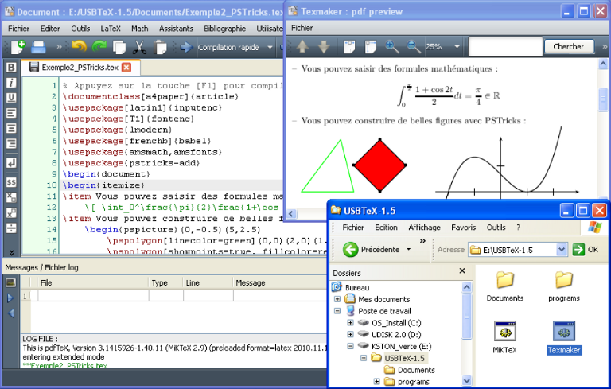

Donald Knuth

Biographie :
Née le 10 janvier 1938 (et toujours en vie à ce jour) au USA, Donald Ervin Knuth (prononcé « Ka-NOOTH » selon ses dires) est un homme aux nombreuse casquettes :
Commençant comme assistant professeur à l’Institut de technologie de Californie —où il avait reçu son doctorat en 1963—, il devient à professeur à l’université de Standford en 1968
et prend en 1992 « sa retraite » dû point de vue de la recherche (inhérente au métier de professeur d’université qu’on nomme aussi « Enseignant-Chercheur ») pour se consacrer à sa série de livres The Art of Computer Programming. Cependant, il continue de donner des lectures quelque fois dans l’année à Stanford de manière bénévole.
The Art of Computer Programming :
Comme dit plus haut, il est l’auteur d’une série de livres faisant référence dans les sciences algorithmiques : The Art of Computer Programming dont le premier volume (sur un total de 4 publié et 7 prévus) fait déjà plus de 3 000 pages.
Il n’y a donc rien d’étonnant que Knuth considère cette série comme « le projet le plus important de sa vie » et y dédie la totalité de son temps même s’il confesse « aller manger ou dormir quelques fois [aussi] » (on notera un des très d’humour (souvent geek) typique de l’informaticien).
Dans cette série il explique et analyse des moyens d’améliorer des algorithmes de manière universelle en comprenant et perfectionnant les bases même de ceux-ci.
Mais il ne s’arrête pas à être auteur et professeur car il est également le créateur du logiciel TeX de traitement de texte et de son langage le Metafont permettant notamment une notation claire d’éléments mathématiques comme ci-dessous dès 1977 soit 6 ans avant la première version de Microsoft Word !

Fenêtre issu du logiciel TeX
Récompenses et honneurs reçus :
Knuth fut récompensé par le Prix Turing en 1974 pour sa contribution au monde de l’informatique avec The Art of Computer Programming ainsi que de nombreuses médailles et prix pour ses livres ou pour son logiciel TeX. Notamment la National Medal of Science,
récompenses officielles du gouvernement états-uniens qu'il reçu en 1979!. Un prix fut d'ailleurs créé en son honneur, le Prix Knuth.
Ressources supplémentaires :
-Blog officiel de Knuth et sa sous-partie "Questions souvent posées" remplie d'infos!
-Page Wikipédia de Knuth.
-The Art of Computer Programming sur Amazon (Je vous conseil plutôt de l'acheter en librairie cependant)
-Version PDF de la page!
Quizz